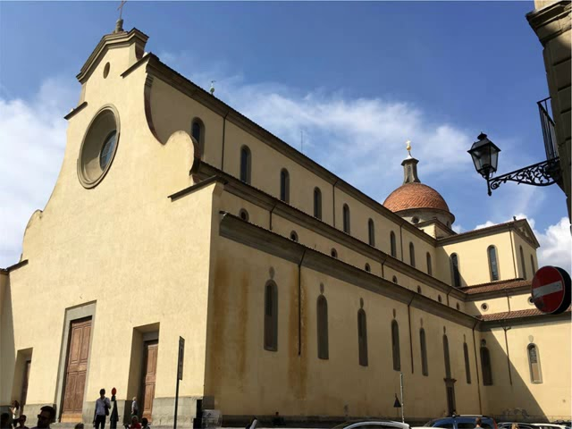

Se denomina Quattrocento al arte renacentista desarrollado en el s XV en Florencia, caracterizado por el antropocentrismo, el renacer de la Antigüedad y el apoyo de los mecenas, sin romper totalmente con la tradición gótica.
Brunelleschi, cuya Cúpula de Santa María de la Catedral de Florencia marca la ruptura con el quehacer gótica y es considerada manifiesto del Gótico, es su principal figura. Introduce el nuevo estilo al crear iglesias de planta cuadrada (capilla Pazzi), utilizar, por primera vez en el renacimiento, el arco de medio punto, y crear el modelo de palacio renacentista (Pitti), con predominio de las líneas horizontales.
Otro de sus grandes representantes, en arquitectura, es Alberti, gran teórico, más proyectista que realizador, que se dedicó especialmente a la construcción de edificios de carácter funcional, grandioso y urbanístico.
En escultura, destacan Lorenzo Ghiberti, que propugna una vuelta a la estatuaria grecorromana y esculpe como si fuera un pintor, sobre todo relieve; Donatello, que aprendió en el taller de Ghiberti y esculpió la figura humana con todo tipo de matizaciones; Andrea Verrocchio, maestro del bronce, cuya obra está impregnada de sensualidad, y los hermanos della Robbia.
Por último, la pintura del Quattrocento busca imitar las cosas como son, presta especial atención a la profundidad, la expresividad y el movimiento; busca la representación científica del espacio mediante la aplicación de un sistema de proporción y de la perspectiva de punto de fuga o científica y tuvo a Florencia, Roma y Venecia como centros.
En cuanto a temáticas, pervive la pintura religiosa y se desarrollan con fuerza el retrato y la pintura mitológica. La luz cobra valor en la unidad ambiental y en la plasmación de los cuerpos. Fueron pintores destacados del periodo Masaccio, Ucello, los Lippi, Domenico Veneziano, Fra Angelico, Andrea del Castagno y Piero della Francesca.
Este período se origina en el siglo XV y principalmente abarca el Renacimiento primario que se inicia en Italia. En este periodo se busca un nuevo lenguaje, la arquitectura civil adquiere gran importancia, buscando espacios racionales y organizados con unas reglas esenciales, como una distribución organizada de los espacios públicos. Por lo tanto, las áreas residenciales, centros comerciales, y los palacios dejan de ser concebidos como fortalezas dando una nueva imagen al nuevo poder ciudadano.
La decoración de las fachadas se basa en la utilización del almohadillado, que son sillares con aristas rehundidas, y se utilizan elementos puramente arquitectónicos con un toque clásico. Uno de los ejemplos más notables es el Palacio Medici-Ricardi de Florencia, construido por Michelozzo en 1444. Otras obras importantes son las de Brunelleschi, de la “Iglesia de San Lorenzo”, la “iglesia del Santo Spirito”, el “Palacio Pitti”, y la “Capilla Pazzi”. Igualmente, los grandes maestros del Quattrocento fueron Filippo Brunelleschi y Leon Battista Alberti.